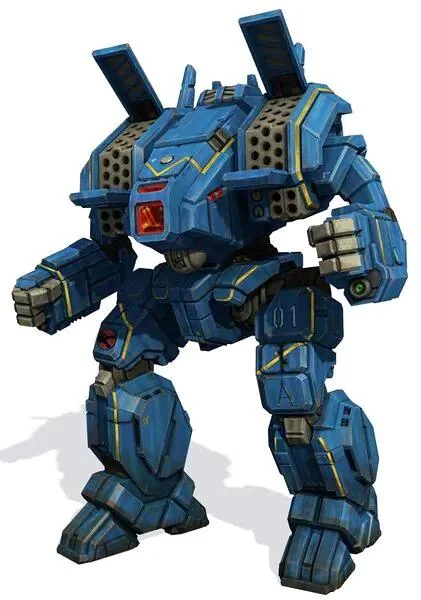
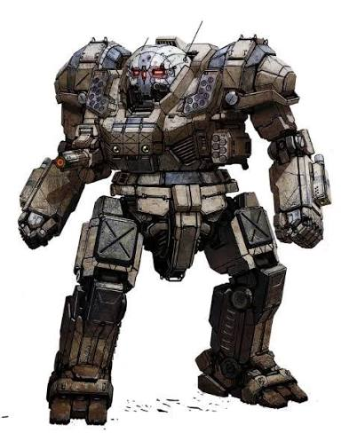

Alphabetisch
Archer

| Tonnage | 70 Tonnen |
| Class | Heavy |
| Besondere Merkmale | Zusätzlich zu den Raketenlafetten besitzt |
| Rolle | Artillerie |
Der Archer ist der klassische Artillerie Mech der Inneren Spähre
Atlas

| Tonnage | 100 Tonnen |
| Class | Assault |
| Besondere Merkmale | Totenkopf bemalung am Kopf | Rolle | Brawler |
Der Atlas ist der wohl berühmteste Mech in der Inneren Spähre